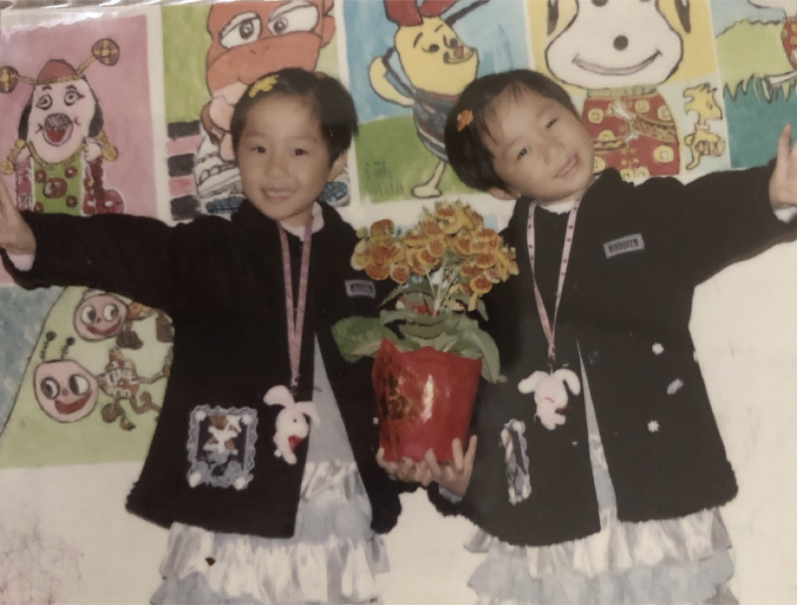
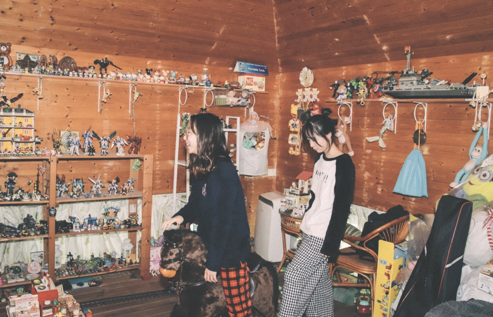
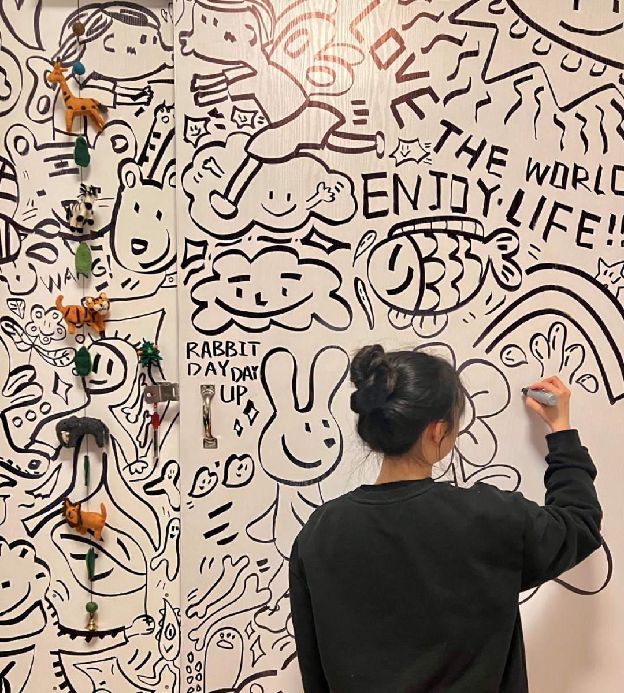

Case review · 45 min
Hi, I'm Bella.Here's what we'll walk through.
Product designer, New York. Three stories: breaking a product's growth
plateau, building 0 → 1, and a small social product I designed and built myself.
The journey so far
2020
Tencent
Started as an interaction design intern
Gamification
Design strategy
Game-based courses for ages 3–8: completion 72% → 98%. "Take a Break": 1M DAU in month one.
2022
Parsons
Strategic design
MS, Strategic Design & Management.
PARSONS
2023
LEGO
Creative campaign
A video campaign that doubled daily sales.
2024 — now
Answer.AI
Product Designer · 7M users
Gamification
Design strategy
Designing with AI
Led the redesign past the growth plateau. Its students are TikTok's audience.
2024 — now
Wanaka
A creator tool, 0 → 1
Creator tool
AI skills
Designing with AI
Players build and publish their own games, then share them with friends.
And through both — working as an AI-native designer
Designing with AI in the loop, and shipping interactive demos and playable prototypes every week.
Beyond work

Born with a best friendMy twin sister Manman — 源源 + 满满. Both designers.

The toy house Dad builtWhere we grew up playing role-play games.

Give me a penDrawing, always. Sports and LEGO sets to unwind.
The brief, decoded — what the role asks × what I bring
The role asks"Own design across core social scenarios (friend interactions and sharing, Story, DMs) and explore new ways to spark authentic connection and interaction between users."
What I bring
- To fill in — the clearest social work you have done
- To fill in — what you learned about how friends actually talk
- Side project — the social demo in chapter 03
Side project
The role asks"Use product thinking and data to surface real user needs, propose product directions and design ideas, and drive them through to launch and validation."
What I bring
- Answer.AI — led the redesign past the growth plateau, for 7M students
- +13% DAU · +23% daily revenue · ~8% 30-day retention
- Tencent — "Take a Break": 1M DAU in month one
Answer.AI · Tencent
The role asks"Use AI coding tools fluently to surface optimization opportunities and rapidly turn ideas into interactive demos, shortening the path from idea to validation."
What I bring
- Four playable game effects in seven days — the TikTok take-home, built with Claude Code
- Wanaka — hi-fi demos we ship and review the same day, AI wired into Figma
- This deck included
Take home · Wanaka · side projects
The role asks"Maintain a high aesthetic bar. Actively use a range of social products across markets and stay current on social interaction patterns and cultural trends."
What I bring
- ABCmouse — illustrated learning worlds for ages 3–8
- Answer.AI — a full IP set: three tutors, character and motion design
- Wanaka — 0 → 1 UI, IP and motion, end to end
- To fill in — the social apps you actually live in, and what you take from them
Four design systems
The role asks"Curate and elevate from large volumes of AI-generated output, turning the 'ordinary' into the 'extraordinary'."
What I bring
- 35 versions of one game demo, judged down to the one that ships
- A library of skills, written by designers — my taste, written down so AI can reuse it
- Three are public: game cover, agent voice, design QA
Wanaka · take home
The role asks"In complex business contexts, use the simplest design approach to solve the core problem. Partner closely with product managers and engineers to ship."
What I bring
- To fill in — the messiest project, and the simple idea that carried it
- Answer.AI — one personalized school, built across PM, engineering and content
- Wanaka — shipping 0 → 1 as a small team, every week
Answer.AI · Wanaka
Click a card to flip · F flips them all
Press 1 / 2 / 3 to jump · E about me · F the brief · S script · Space next script line
Hi, it's really nice to meet you. I'm Bella, a product designer based in New York, with about five years of experience. My background's all in the résumé, so rather than read it to you, I made a quick visual — it'll only take a minute. [E · open]
I started at Tencent on ABCmouse, a gamified EdTech product — making interactive games for kids — and then moved to Tencent Meeting, where I helped build the design system and core features. Then I came to New York for my master's in Strategic Design and Management, and worked at LEGO as a creative strategist along the way. Since graduating in 2024, I've been the product designer at Answer.AI, which is an AI education company with seven million students, and at the same time building Wanaka, an AI game creation tool, from zero to one. So for the past two years, AI has been part of every step of my process. [scroll to photos] And beyond work — I have a twin sister, Manman. Our names together are 源源满满 — it means "full and flowing" in Chinese — and we're both designers. We grew up in a wooden toy house our dad built, playing every kind of role-play game — and I think that's a big part of why we both became designers who care about empathy. I've loved drawing for as long as I can remember — give me a pen and I'll just keep going. And outside of work, I do sports and build LEGO sets. [E · close]
I also went through the JD carefully, and I think my background is a strong match — we can come back to this at the end if it's useful. [F again]
So here's the plan for today. First, Answer.AI — that's a growth story, and I'll spend most of the time there, about eighteen minutes. Then Wanaka, a zero-to-one creator tool, and how my team builds with AI. And last, a social side project I designed and built myself. Whatever time is left, we'll use for Q&A. Alright, let's start with Answer.AI — and please feel free to jump in at any point. [1]